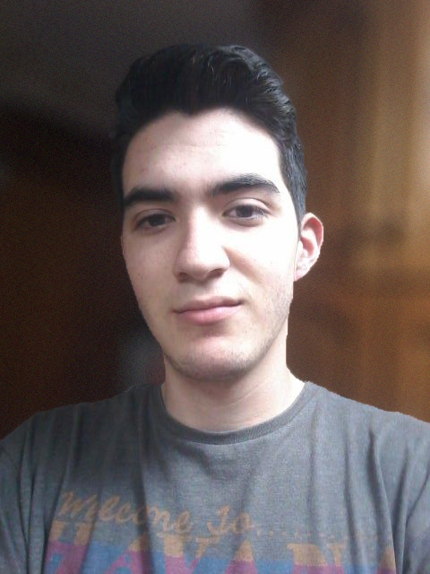

David Ferreiro Fernández
Ingeniero de Software
¿Quién soy?
Mi nombre es David Ferreiro Fernández, nací en Gijón, Asturias en Octubre de 1997. Actualmente me encuentro en último curso de Ingeniería del Software en la Escuela de Ingeniería Informática de Oviedo. Cuando termine mis estudios me gustaría incorporarme a la industria del videojuego como programador de Gameplay. También encuentro apasionante la rama de la ciberseguridad, por lo que quizá continúe formándome en ese ámbito.

Formación
2016 - Actualidad
Grado bilingüe en Ingeniería Informática del Software
Universidad de Oviedo
2015 - 2016
Grado en Ingeniería Informática en Tecnologías de la Información
Universidad de Oviedo
2009 - 2015
Bachillerato Científico-Tecnológico
I.E.S. Número 1 de Gijón
Otra formación
2015
Permiso B
Experiencia
Noviembre 2018 - Febrero 2019
Becario Dpto. Informática
Ibérica de Revestimientos Grupo EMP S.L.U.
Mantenimiento de hardware/software central y soporte a tiendas.
Septiembre 2018
Voluntario en Editathon
Escuela de Ingeniería Informática
Ayudar a una mayor presencia del asturiano en Wikidata.
Habilidades
- Java
- JavaScript
- HTML5, CSS3, Bootstrap 3
- C#
- Bases de datos relacionales (MySQL, hsqldb, SQLite, PostgreSQL, Oracle) y no relacionales (MongoDB)
- Git
- Programación de videojuegos (Cocos2d, Unreal Engine, Unity)
- Aspectos básicos de administración de servidores Linux y Windows
- Microsoft Office
- Montaje y mantenimiento de hardware informático
- Edición amateur de vídeo, imagen y sonido
-
Idiomas
- Español - Materno
- Inglés - Avanzado